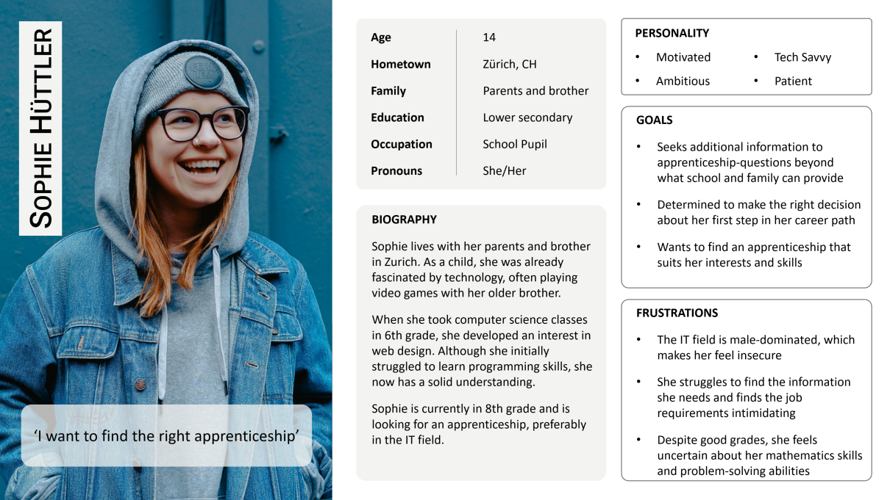

BYTEMENTOR


The Problem
Gender-sepcific careers remain inaccessible to many, limiting opportunities for young people.
The Goal
Aligned with UN Goal 4.3, the project aims to make gender-specific careers accessible to all.
My Role
Entire product design from research to conception and testing in a group of three.
To ensure ByteMentor meets the needs of its users, we started our project by identifying potential problem areas through empathy interviews. We spoke with four young women (ages 16 to 24) - some already in IT apprenticeships, others still uncertain about their career paths.
Lack of Clarity
Job descriptions often don't match real tasks
Uncertainty
Doubts about wheter their skills are good enough
Information Source
Career details are scattered across different sources
Contant to Companies
Few options to connect with companies for apprenticeships
Lack of Clarity
Job descriptions often don't match real tasks
Uncertainty
Doubts about wheter skills are good enough
Information Source
Information is scattered across sources
Conections
Few options to connect with companies
With the gathered insights, we developed Sophie, a representative persona that reflects the challenges and aspirations of young people exploring IT careers. By defining her needs, we were able to prioritize key features in our app, ensuring it directly addresses the pain points of career exploration.
Next, we created a problem scenario to focus on the key needs we aimed to address. This scenario is told from Sophie's perspective, highlighting the challenges and uncertainties she faces.
Sophie is an aspiring apprentice who needs a clearer understanding of the everyday realities of an IT career because the lack of practical insights makes it hard for her to form a confident career decision.
We explored ideas through quick sketches, refining concepts visually before moving into digital prototyping. This phase allowed for rapid iteration and user-focused adjustments.
By designing a clear and structured information architectur we ensured users find what they need effortlessly redusing frustration and improving engagement. We focused on:
We Created user flows to visualize the key steps user take to achieve their goals. This helped us identify the most efficient paths and ensure smooth, intuitive experience. By mapping out the flows, we defined the necessary pages and interactions required for the prototype.
We explored ideas through quick sketches, refining concepts visually before moving into digital prototyping. This phase allowed for rapid iteration and user-focused adjustments.


We tested six potential users, two of whom had previously participated in the interviews. A guide was created to assist facilitators with questions and note-taking. As a team we all three conducted three interviews (one person asked the questions and the other two took notes), while the remaining three interviews were led by me individually, conducting the whole process. All tests took place in-person at the location wished by the participants, with participants using the Figma prototype on a phone provided by our team.
1 ) Improve back button functionality:
Four testers reported that the back button did not take them to the desired screen, leading to confusion.
2 ) Simplify navigation through careers:
Two testers had trouble understanding that clicking on images in the carousel led to different professions, not more images of the same profession.
3 ) Introduction to favourites functionality:
Three testers were unclear about the purpose and usage of the "Favorites" feature.
4 ) Freedom to hide and show irrelevant test results:
One tester found the presentation of results in percentages useful, but another was confused when seeing results for professions with 0% matches, suggesting a clearer display.